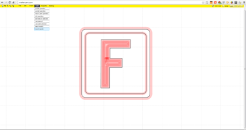

Assembly Overview
Welcome!
Thank you for supporting Project Shapeoko. The following pages are filled with all the information you need to assemble your Shapeoko 2 desktop CNC machine. If you have any difficulties with assembly, please check the ShapeOko wiki and forums.
Tools
Only basic tools are required to assemble the Shapeoko 2. The following tools are included with the full kits sold through inventables.com. If you are rolling your own full kit (you bought the mechanical kit), use the following list as a guideline for what you will need to assemble the machine.
- Hex Key Set 1.5 / 2.0 / 2.5 / 3.0 / 4.0 mm
- Screw Driver 2.0mm blade
- Wrench 13mm Qty 2
- Wrench 8mm (5/16")
- M5 Tap and handle
- Spiral End Mill
- Safety glasses
- cable ties (100)
- thread lock
- razor blade
Assembly Steps
Software
Before we can control our machine, we need to install and/or configure some software. If you're going to test your electronics, then you'll need to have this step done before you can complete that step. Otherwise, you'll need to complete this step before running Hello, World.

Electronics
In this step, we will test our electronics setup. It's beneficial to do this prior to assembling the machine, as some issues are more easily addressed before assembly takes place. If a problem were to occur, it's much easier to troubleshoot without having to disassemble the machine!

V-Wheels and Idlers
A lot of the "work" required to assemble the machine is done in this step. It's not hard work, but it'll take a while. Just like long division.

Carriages
This is the most labor intensive part of the assembly. You will be assembling 3 motor mount plates.

Z-Axis
The z-axis is comprised of 3 seperate assemblies, and will require some time (and patience) to fully assemble. once you are done with this step, your machine will really start to take shape.

Gantry

Y-Axis

Work Area

Electrical Wiring
Hello, World
Your very first run!

First Job
